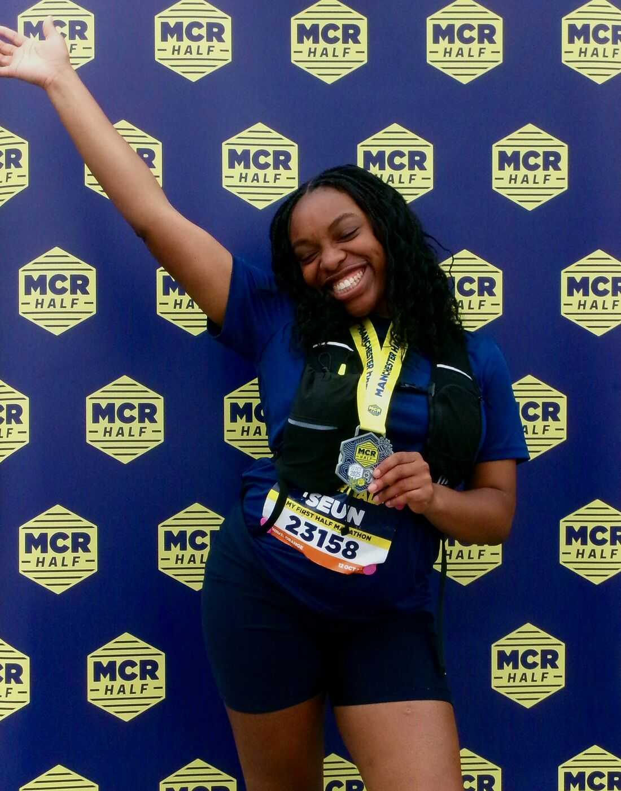
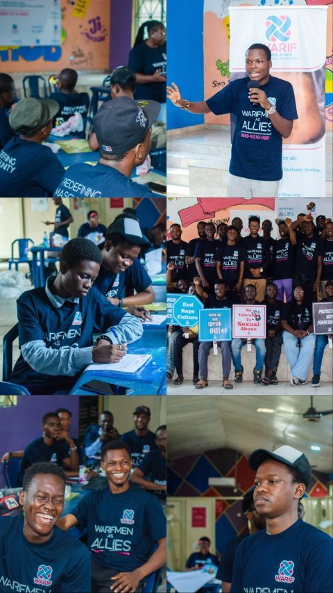
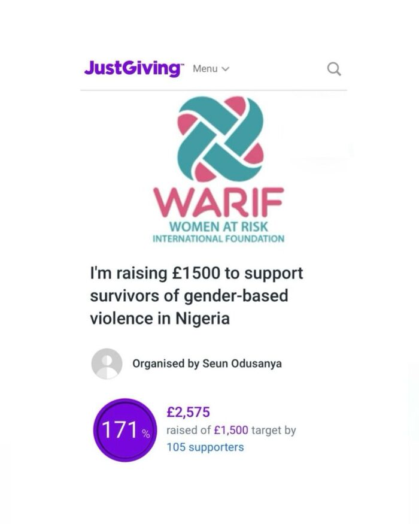
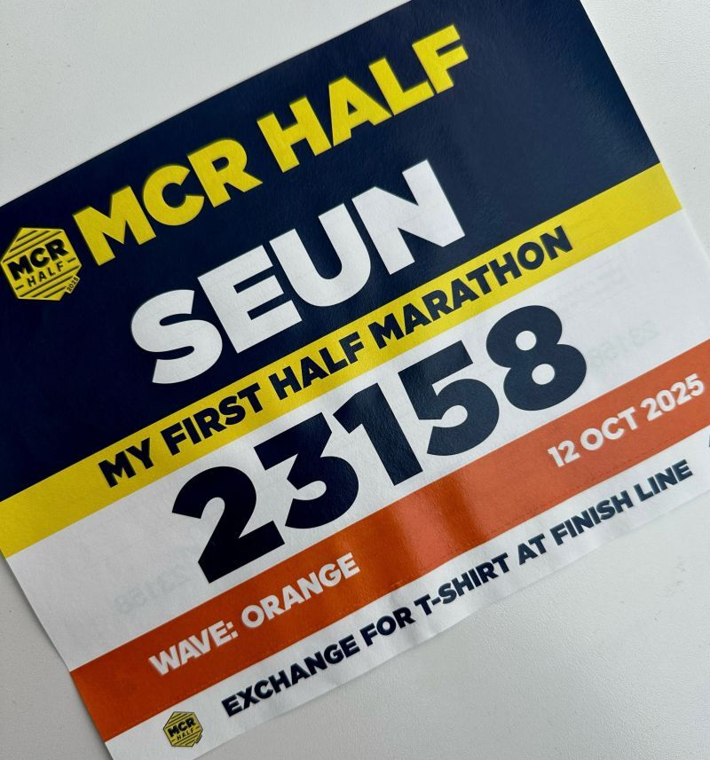
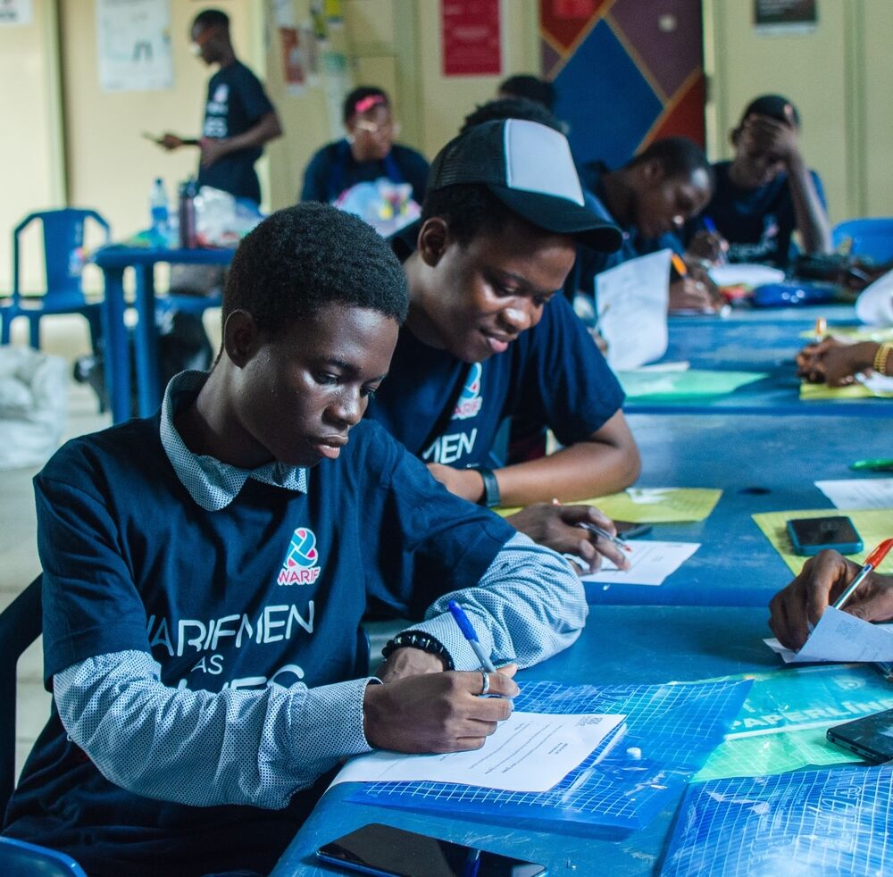
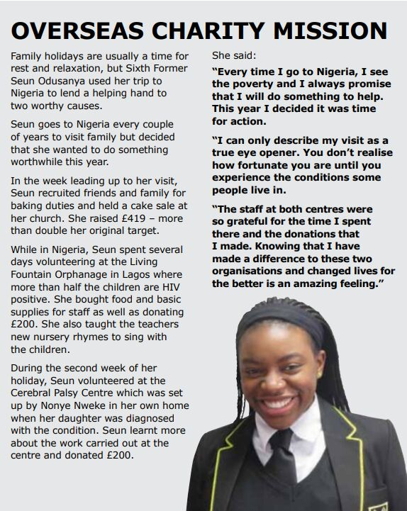
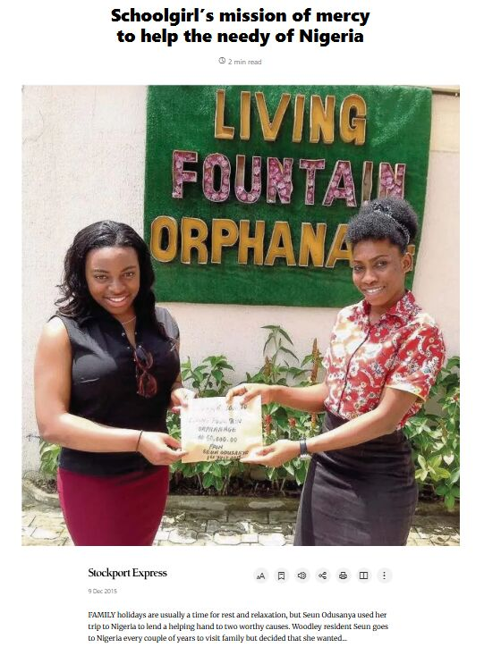
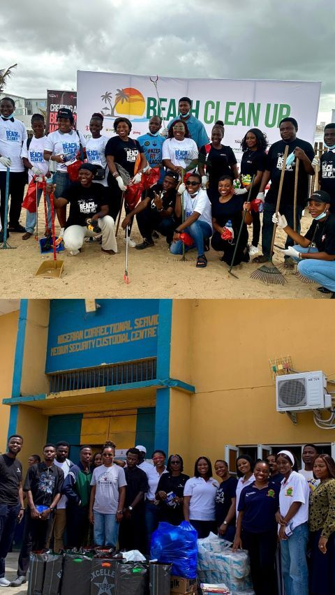

Seun's projects
Work that shows up in the community
From a Manchester half marathon to beach clean-ups in Lagos, Seun turns her networks into practical support.
- First-Class Graduate
- UN Women UK
- Pan-African Youth Parliament
- Theirworld Ambassador

Project · Gender equality
Raised £2,575 supporting survivors of gender-based violence in Nigeria
A key milestone was running the Manchester Half Marathon in October 2025, through which Seun raised over £2,500 for Women At Risk International Foundation (WARIF), an organisation dedicated to combating gender-based violence in Nigeria. Read her LinkedIn post.
The funds were used to support the Men As Allies (MAA) programme, designed to partner with around 50 men and boys in local communities to champion gender equality and reduce Violence Against Women and Girls (VAWG). The initiative strives to deconstruct harmful societal norms by equipping men, aged between 18–35, with the knowledge and skills to adopt gender-equitable attitudes and behaviours.

To complete the programme, participants were required to design a personal commitment to tackle VAWG in their local communities. Some of the most impactful ideas included creating online classes and videos to educate youth on the various forms of VAWG, including physical, sexual, and psychological abuse.
The MAA programme also aligns with global efforts under the United Nations’ Sustainable Development Goal 5 to achieve gender equality by 2030, by ending VAWG and harmful practices such as child marriage and female genital mutilation, and ensuring equal access to education and economic opportunities.
It is within this broader context that WARIF designed the MAA project to engage young men, not as perpetrators, but as protectors and partners in change. Seun has also mobilised young professionals in her network to deliver virtual digital skills training for vulnerable girls in Nigeria.



Project · Diaspora engagement
From a church cake sale to a charity mission
This began at 16, when Seun organised a cake sale at her local church in Manchester, raising more than double her target to support an orphanage in Lagos. Seun has continued to turn this commitment into tangible impact through mobilising her diaspora network.
The story was covered by the Stockport Express and her school magazine, Taking Stock, as a Lower Sixth pupil who travelled overseas on an inspiring charity mission.



Project · Social impact
Three months in Nigeria, 2025
In 2025, Seun spent three months in Nigeria, gaining first-hand experience of how organisations are driving positive change within communities.
One highlight was volunteering with Sterling One Foundation at their Elegushi Beach Cleanup. Plastic pollution is one of Nigeria’s most visible environmental challenges, and through their National Beach Adoption Programme, they empower coastal communities, particularly women and youth, to collect and recycle waste. Witnessing how plastic could be transformed into resources that support a circular economy while creating livelihoods was both inspiring and rewarding.
Seun also volunteered with Kornerstone Counselling Centre at Ikoyi Correctional Centre, where around 3,000 inmates are crammed into facilities designed for only 800. Many of them are serving time for minor offences simply because they cannot afford legal representation. Listening to their stories and distributing essentials like food and toiletries was a deeply humbling experience that reminded her how even simple acts of kindness can restore dignity and hope.
These experiences reaffirmed her belief in the transformative power of collective, purposeful action, whether tackling environmental challenges or supporting vulnerable communities. Seun believes this is what lies at the heart of lasting social impact.